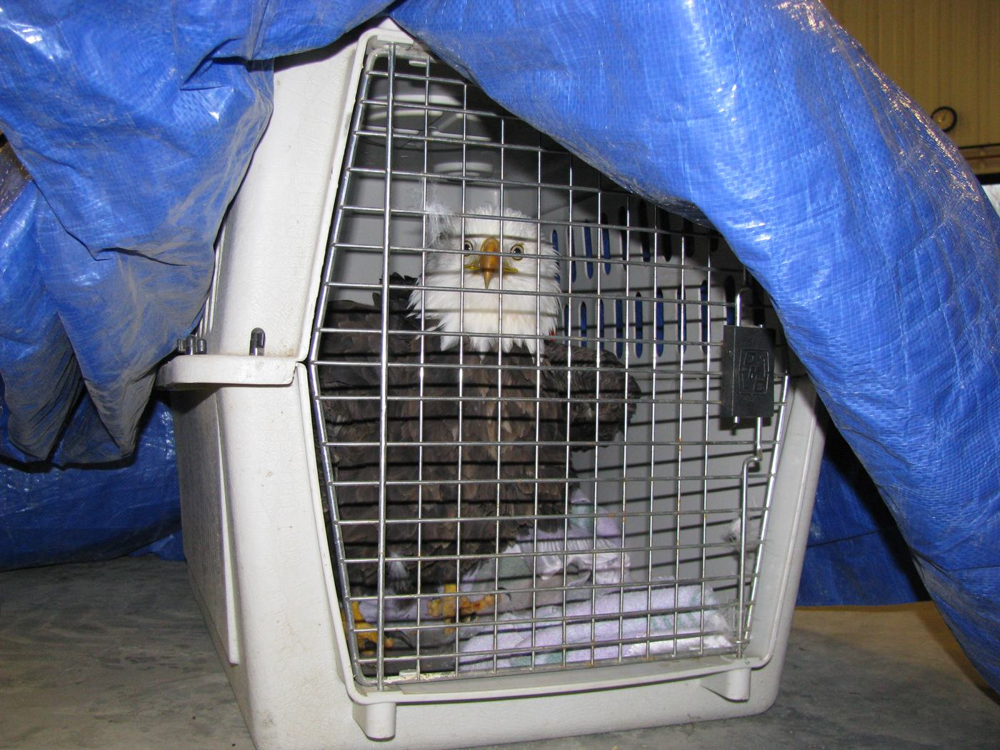
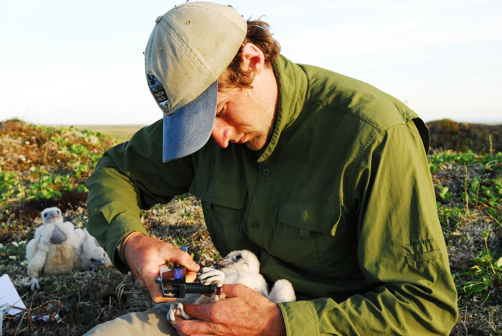
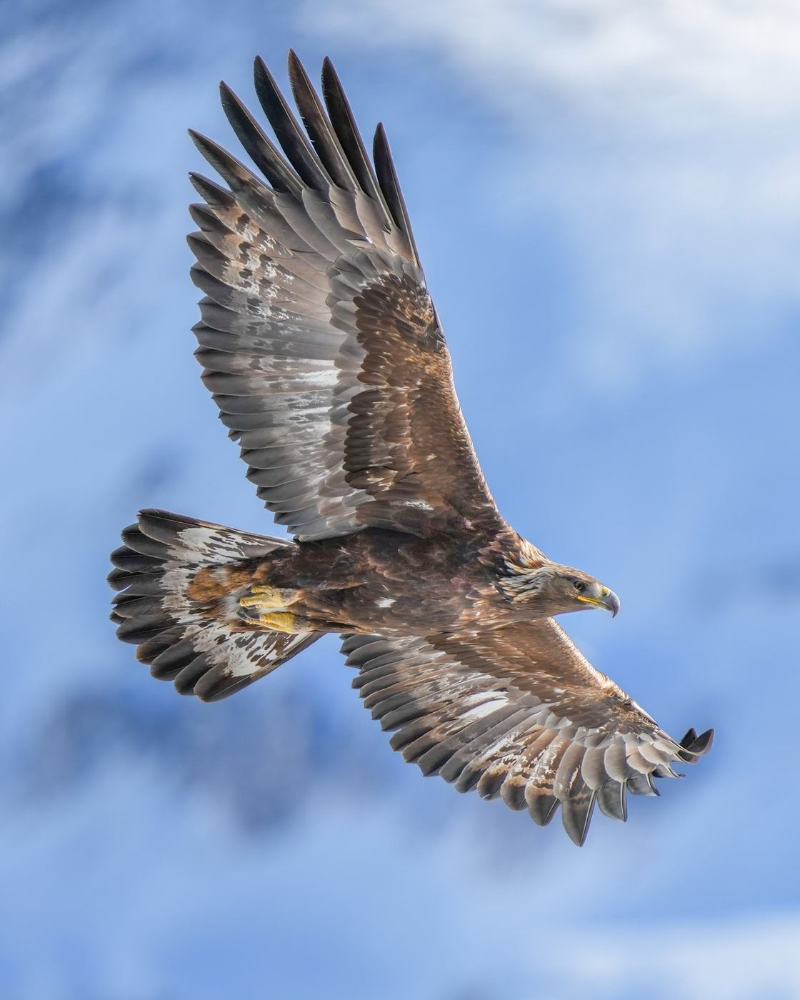
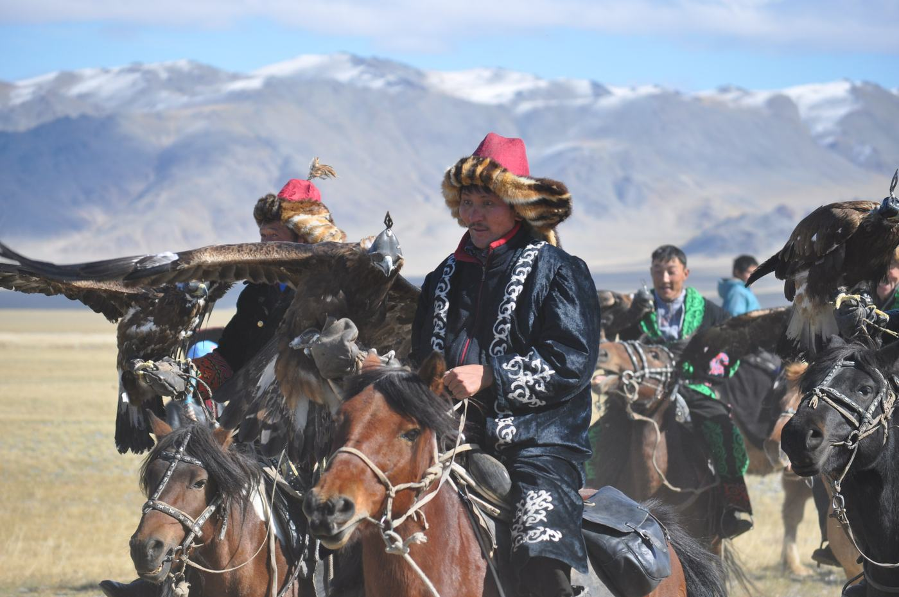
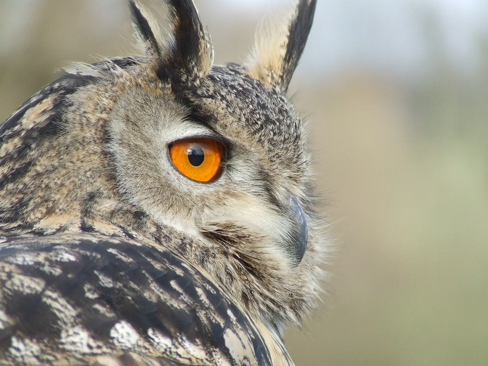

In care
Altyn
Eastern imperial eagle · қарақұс
Found under a power line near Uryl with burned primaries. Waiting for the autumn moult to grow the feathers back.
Katon-Karagay · East Kazakhstan
Power lines, poison and shotguns bring down eagles over the Kazakh Altai every year. We pick them up, repair what can be repaired, and put them back into the sky above the valley they came from.

214
birds admitted since 2019
141
returned to the wild
9
permanent residents
1 800
pupils in our school programme
Our work
A bird that reaches us alive has about two hours of useful time. This is the route from the moment the phone rings to the moment it is a wild bird again.

01We ask the finder to put the bird in a dark box, with no food and no water, and to keep it warm and quiet. Our van covers the district in under two hours. Most calls come from shepherds and from the power company.

02X-ray on the first day, then a fracture is pinned and the bird spends six to ten weeks in a quiet box aviary. The last stage is a forty metre flight corridor, where it has to hunt live prey before anybody talks about release.

03A bird goes back to the valley where it was found, ringed and weighed, on a clear morning with a full crop. Two of our eagles carry light transmitters, so pupils in Berel can follow their flights in the classroom.

Who we are
Qyran started in 2019 in a shed behind the district veterinary station, when a shepherd brought in a steppe eagle with a broken wing and nobody knew what to do with it. Today we are four people and about thirty volunteers, and we are the only centre between Oskemen and the Chinese border that can keep a large eagle for a whole winter.
Half of our volunteers are bürkitshi, the eagle hunters of the Altai. They have handled eagles all their lives, they know how a healthy bird behaves, and they are the reason a frightened two-kilogram eagle can be examined without a fight.
“A hunting eagle is a guest in your house for ten years and then it goes back. Our birds are the same guests. They only stay longer than we would like.”
In the aviaries now
In care
Eastern imperial eagle · қарақұс
Found under a power line near Uryl with burned primaries. Waiting for the autumn moult to grow the feathers back.

Ready for release
Steppe eagle · дала қыраны
A young male that was starving after his first autumn. He now takes live prey in the flight corridor and goes back to the steppe in two weeks.

Permanent resident
Eurasian eagle owl · үкі
Lost his left eye in a collision with a car in 2021. He cannot hunt at night any more, so he stays and meets every school group instead.
How you can help
A bird found in the morning and brought in the evening usually survives. The same bird brought two days later usually does not. The rescue line is answered day and night.
How to reportNine birds will never fly free again. Feeding one eagle costs about 24 000 ₸ a month, and that is what an adoption covers.
Adopt a birdMost birds arrive because somebody did not know what a young eagle on the ground means. A school visit is the cheapest prevention we have.
Book a visitRescue line
Then it is injured, and it needs help today. Keep it dark, warm and quiet, do not feed it, and call. We answer at three in the morning too.
+7 705 214 00 19
Send the details